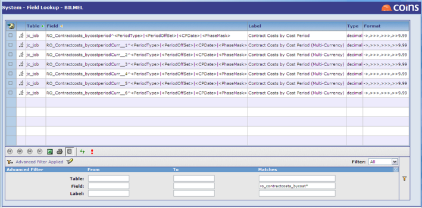

Basic Principles - How Multi-Currency Works
operates as a multi-currency system; can operate as a single-currency system or a multi-currency system; configuration defines which is in use. If single currency is in use, currency prompts on screens are ed out. Single currency can be turned into multi-currency , but the reverse cannot be performed.
Each has a "Base Currency" defined. A common approach is to have different base currencies in different , for example 1, 2 and 3 in GBP, 4 in EUR, 5 in USD, and so on. There does not necessarily need to be any sequence to this. It is common for one currency to reflect the majority of the items and , with other configured to have Base in their own "Local Currency".
In the database many key values (for example net, , discount, gross, etc) are actually held six times. In a single currency system just field 1 is used. In a multi currency system all six are used. Each of these six entries actually holds the value, and the exchange rate used. The six fields are :
1 - Document currency (for example invoice; the original transaction value)
2 - Base currency for the
3 - Alternative base currency 1
4 - Alternative base currency 2
5 - Alternative base currency 3
6 - Account currency (for example account on PL, currency on JC, etc)
The document currency is that of the transaction; for example, the invoice. An invoice in say USD may be processed through a operating overall in base of say GBP. If foreign currency is not involved this will be the same value as the base currency.
The account currency is that of the account for that transaction; for example, account currency for an invoice or currency for a costing transaction. In very many cases these values will be the same as the document currency, and therefore the same as base. In practice, users are advised not to use the facility to have invoices of more than one currency on the same account, etc, but to keep different accounts for this purpose. This is not that cannot handle this combination, but simply to guard against errors by input staff that could arise if this is allowed.
Alternative base currencies are used for reporting in currencies other than the base currency; see Alternative Base Currency.
The currency values are calculated by when the records are written to the system. If any of the Alternative Base currencies are not in use then the relevant fields will always be zero.
It is important in certain advanced areas of to know how these six values are used. For example in the Report Writer users are offered a selection of fields and the currency items are shown as six entries; the user has to select the required one. If you do not require any multi-currency facility, and only want to report in Base currency, choose value 2. Regular end users, however, will not be presented with this at any point.
Example of Report Writer field selection
The six lower entries are the six values for costs by cost period.

In the case of General Ledger balances a different approach is employed because the value fields are already held 12 times or more, one value for each period, and therefore three additional currency balance fields are held on this data, also with 12 or more values, to hold the alternative base values for each period.
In the case of General Ledger transactions, GL accounts are always in the base currency of the , and therefore it would be redundant to hold both Base and Account values, as they would always be the same. Therefore GL transactions have only five currency values held, not six. The one omitted is the last one, account currency. The same approach applies to transactions.
Some standard reports provide options for which currency they will report in, while others do not. Where there is no provision for foreign currency, the entries are always in the base currency of the .